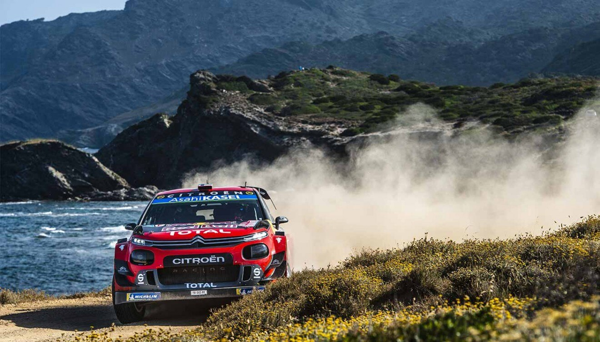

CITROËN RACING: HISTORIA
En enero de 2019, Sébastien Ogier y Julien Ingrassia ganarón el Rallye de Monte-Carlo, consiguiendo la victoria 101 en WRC para Citroën Racing, año en que la marca celebra su centenario.
100 AÑOS DE ÉXITOS DEPORTIVOS
Desde su creación en 1919, Citroën siempre ha demostrado su capacidad para vencer todos los retos de aventura y deportivos. Desde el primer departamento de competición de la Marca hasta Citroën Racing actualmente, los equipos Citroën han escrito una historia plena de victorias y éxitos deportivos.
Con motivo de su centenario, Citroën ha publicado un catálogo “coleccionista” con una selección de 30 modelos icónicos representativos de los 100 años de la Marca. Desde el Autocadenas lanzada para conquistar el Sahara en 1922 a el último C3 WRC, descubre los 10 vehículos icónicos de Citroën Racing. ¡Un auténtico viaje en el tiempo!
- 36 victorias en 42 pruebas, incluyendo 4 victorias en el Dakar
- 25 victorias de Pierre Lartigue, 10 de Ari Vatanen y 1 de Timo Salonen
- 5 títulos de Constructores en la Copa del Mundo FIA de Rallye-Raid (de 1993 a 1997)
- 5 títulos de Pilotos: Pierre Lartigue de 1993 a 1996 y Ari Vatanen en 1997
- Victoria 100 de Citroën con el C3 WRC en el Rally de Monte Carlo (enero de 2019)
- 8 títulos de ‘Constructores’ en FIA WRC (2003 a 2005 y 2008 a 2012)
- 9 títulos de ‘Pilotos’ y ‘Copiloto’ para Sébastien Loeb y Daniel Elena (2004 a 2012)
- 31 pole positions en 35 clasificaciones
- 50 victorias, 45 vueltas rápidas y 119 podios en 69 carreras
- 28 victorias para José María López, 11 para Yvan Muller, 6 para Sébastien Loeb, 2 para Ma Qing Hua, 1 para Mehdi Bennani y Tom Chilton
- 3 títulos de Constructores en FIA WTCC (de 2014 a 2016)
- 3 títulos de Pilotos en FIA WTCC para José María López (de 2014 a 2016)